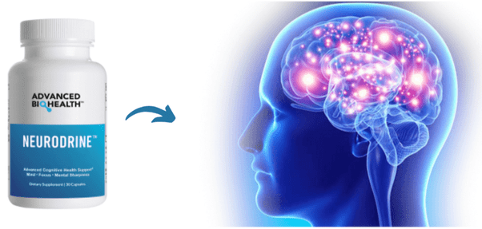

Unlock Your Brain's Potential with Neurodrine: The Smart Solution for Brain Optimization!
In our information-driven world, the capacity to unlock our brain's full potential has become increasingly vital...
In a world that demands constant focus, creativity, and productivity, having a sharp and agile mind is essential for success. To meet these challenges, individuals are turning to nootropic supplements, like Pure Neuro VSL, to enhance cognitive abilities and unlock their mental edge. This article provides a detailed exploration of Pure Neuro VSL, its scientifically-backed ingredients, potential benefits, safety considerations, and the significance of maintaining optimal brain health.
Nootropics, also known as "smart drugs" or cognitive enhancers, are substances that improve cognitive functions such as memory, attention, and creativity without significant side effects. They work by influencing neurochemicals, brain circulation, and neural pathways to enhance brain performance.
Pure Neuro VSL is a cutting-edge nootropic supplement formulated to support brain health and cognitive function. Developed by a team of neuroscientists and researchers, this unique blend of natural ingredients aims to provide users with optimal mental clarity, focus, and memory.
a. Citicoline: Citicoline is a compound that helps in maintaining healthy brain cell membranes and supports the production of neurotransmitters. It may enhance memory, attention, and focus.
b. Lion's Mane Mushroom Extract: Lion's Mane is a medicinal mushroom known for its potential neuroprotective and neuroregenerative properties. It may promote nerve growth factor (NGF) production, which can support brain health and cognitive function.
c. Phosphatidylserine: This phospholipid is essential for healthy cell membranes in the brain and plays a crucial role in maintaining cognitive function, especially in memory retention.
d. Bacopa Monnieri: Bacopa Monnieri has been used in traditional medicine for centuries to enhance memory and learning. It may improve cognitive performance by supporting neurotransmitter activity.
e. L-Theanine: Found in tea leaves, L-Theanine promotes relaxation without inducing drowsiness. It may complement other ingredients in Pure Neuro VSL to enhance focus and reduce stress.
f. Rhodiola Rosea: An adaptogenic herb, Rhodiola Rosea, helps the body manage stress and fatigue, leading to improved mental endurance.
a. Improved Memory and Learning: The combination of Citicoline, Phosphatidylserine, and Bacopa Monnieri may enhance memory retention and learning abilities, enabling users to grasp and retain new information more effectively.
b. Enhanced Focus and Concentration: The synergy of L-Theanine and Lion's Mane Mushroom Extract can promote a state of calm focus, allowing users to concentrate on tasks without distractions.
c. Neuroprotection and Regeneration: Lion's Mane Mushroom Extract and Rhodiola Rosea offer potential neuroprotective effects, safeguarding brain cells from oxidative stress and supporting their regeneration.
d. Stress Reduction: Rhodiola Rosea and L-Theanine help mitigate stress and anxiety, promoting a balanced mental state.
e. Increased Mental Energy: The ingredients in Pure Neuro VSL may work together to enhance overall cognitive energy, leading to improved mental agility and productivity.
Pure Neuro VSL is formulated with natural ingredients, and when used as directed, it is generally considered safe for most individuals. However, some users may experience mild side effects such as headaches, digestive issues, or insomnia. As with any dietary supplement, it's essential to follow recommended dosages and consult a healthcare professional, especially if you have pre-existing medical conditions, are pregnant or nursing, or are taking medications.
Optimal brain health is fundamental to overall well-being. In addition to using nootropic supplements, adopting a brain-healthy lifestyle is crucial. Regular exercise, a balanced diet rich in antioxidants and Omega-3 fatty acids, quality sleep, and engaging in mental activities can all contribute to maintaining a healthy brain.
As interest in nootropics and cognitive enhancement grows, ethical considerations come to the forefront. Ensuring equitable access to cognitive enhancement methods and addressing potential long-term effects is vital. Responsible use involves staying informed, understanding the potential risks and benefits, and prioritizing overall health and well-being.
Pure Neuro VSL offers a promising path to optimal brain health and cognitive enhancement. Its well-researched blend of natural ingredients can help users achieve improved memory, focus, and mental clarity. While nootropics like Pure Neuro VSL can play a role in enhancing cognitive abilities, they should be part of a broader strategy that includes a brain-healthy lifestyle. By unleashing your mental edge with Pure Neuro VSL and prioritizing brain health, you can navigate life's challenges with increased mental agility and achieve your full potential.

Transform your life. Subscribe now for wellness insights!
In our information-driven world, the capacity to unlock our brain's full potential has become increasingly vital...

Hearing loss is a prevalent health concern that affects millions of people worldwide...

Maintaining healthy joints is essential for overall well-being and quality of life...

In today's fast-paced world, where stress, pollution, and sedentary lifestyles have become...